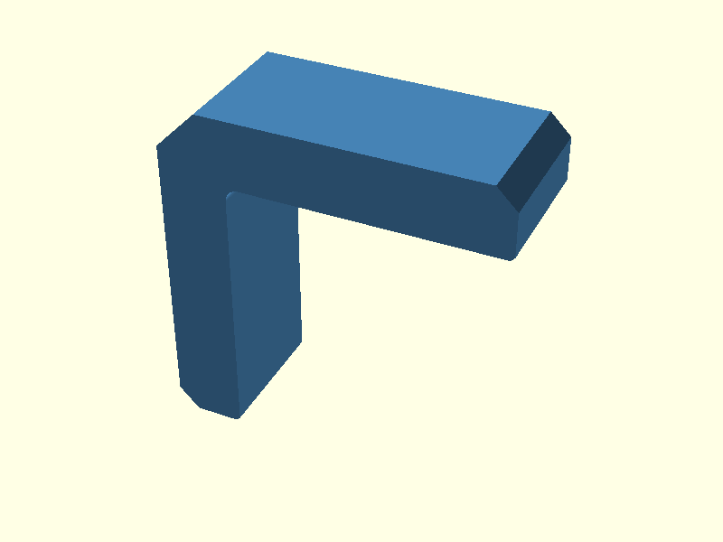
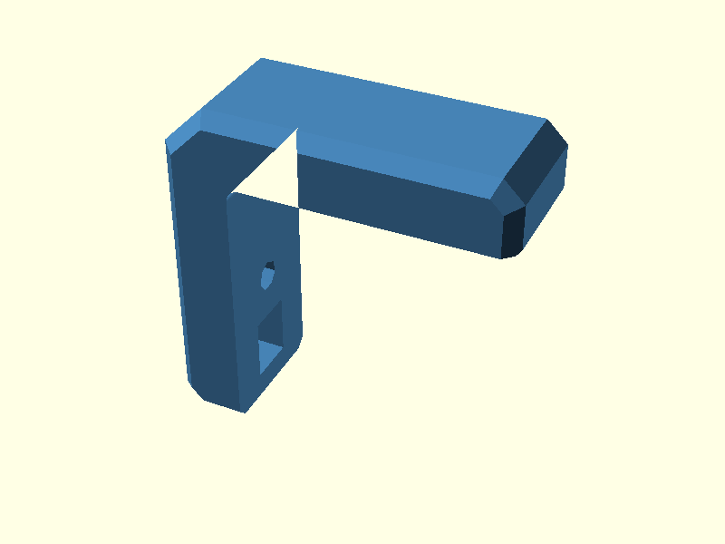
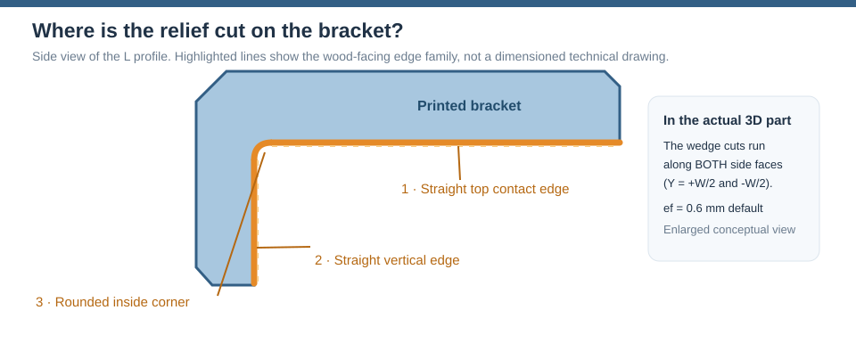
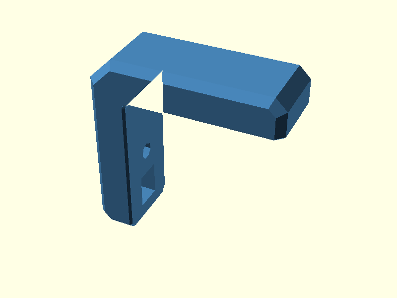
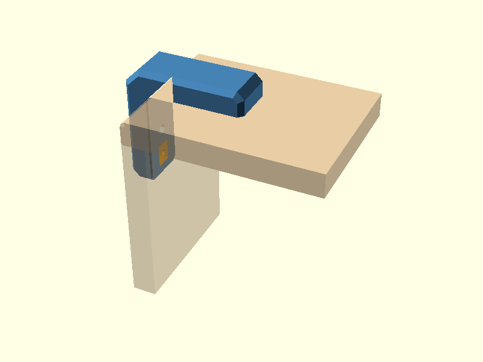
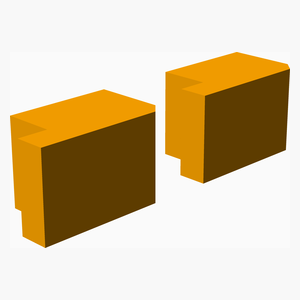
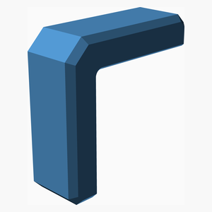
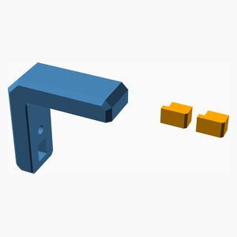

V0.1
Corner bracket — v0.1
Outside-corner bracket for two 10 mm plywood panels. The original parametric design is in corner_bracket.scad. It has two captive-nut pockets accessible from the wood-facing surfaces and two removable plugs that conceal the access windows after assembly.
This is a work in progress. Test-fit the M4 fasteners, nuts, printed clearances, plywood corner relief and printed-part strength before use. All dimensions below are millimetres.
Where to read what
Keep the documentation split by purpose:
- This page: short model walkthrough and assembly context.
- Chamfer Guide: the actual
c,ce,csandefconstruction, step by step. - Elephant-foot Hull Experiment: the separate two-surface experiment, with every input, result and XOR.
- Hull Guide: only the general
hull()concept. - Polygon Guide: only the 2D inside-radius method.
- Mounting Options: bolts, nuts and alternatives.
Design walkthrough
The six pictures show how the bracket is built, from a flat drawing to the finished part. Each step first explains what happens and why, then shows the corresponding OpenSCAD code. You do not need to understand every line at once. The complete model is in corner_bracket.scad; you can explore the steps in design.scad. All dimensions are in millimetres.
1. Draw the L profile and round its inside corner in 2D
For a visual explanation of the arm-end and outside corner chamfers
(c and ce), see the Chamfer Guide.
The original polygon() already contains the complete bracket
outline. Both arm-end bevels and the outside-corner chamfer are
defined by its vertices. Only the inside corner at (0,0) is
initially sharp; a small curved piece is added afterwards.
Add a small rounded piece using ordinary 2D shapes. Place a
r_in × r_in square just inside the sharp corner. Subtract a
circle(r = r_in) whose centre is at (r_in, -r_in).
The remaining piece curves into the corner. union() joins it
to the L without affecting the opposite edges.
Then give the finished 2D outline thickness. linear_extrude()
produces the 20 mm wide bracket (W), and rotate() orients it.
The $fn = 72 setting on this circle gives 5-degree steps, matching
the old 19-point inside radius. r_in = 0 leaves a sharp corner.

Relevant OpenSCAD code:
module inside_corner_2d(r) {
difference() {
translate([0, -r]) square([r, r]);
translate([r, -r]) circle(r = r, $fn = 72);
}
}
tip_top = (ef > 0) ? [[armH - ef, 0], [armH, ef]] : [[armH, 0]];
tip_vert = (ef > 0) ? [[-ef, -armV], [0, -armV + ef]] : [[0, -armV]];
module sharp_profile() {
polygon(concat(tip_top, [
[armH, t - c], // top-arm end
[armH - c, t],
[-t + ce, t],
[-t, t - ce], // outside corner
[-t, -armV + c],
[-t + c, -armV] // vertical-arm end
], tip_vert, [[0, 0]]));
}
module profile() {
union() {
sharp_profile();
if (r_in > 0) inside_corner_2d(r_in);
}
}
module profile_extrusion() {
rotate([90, 0, 0])
linear_extrude(height = W, center = true)
profile();
}
2. Outer side-edge chamfers
New to hull()? Read the illustrated Hull Guide
for the underlying operation, then the Chamfer Guide
for the complete actual model construction, including the
polygon bevels, outside hull, elephant-foot hull and tip junction.
The sharp side edges get a bevel. The code first creates two versions
of the outside outline: one narrower in width and one with a smaller
perimeter. hull() connects them with sloping surfaces.
intersection() then trims the original L profile to that shape.
The two pieces still meet the plywood on flat faces. The parameter
cs = 2 controls this bevel; c and ce belong to the 2D
polygon from Step 1.

Relevant OpenSCAD code:
module outer_shape() {
polygon([
[armH, -armV], [armH, t - c], [armH - c, t], [-t + ce, t],
[-t, t - ce], [-t, -armV + c], [-t + c, -armV]
]);
}
module side_chamfer_env() {
rotate([90, 0, 0]) hull() {
linear_extrude(height = W - 2 * cs, center = true) outer_shape();
linear_extrude(height = W, center = true) offset(delta = -cs) outer_shape();
}
}
module body() {
intersection() {
rotate([90, 0, 0]) linear_extrude(height = W, center = true) profile();
if (cs > 0) side_chamfer_env();
else rotate([90, 0, 0]) linear_extrude(height = W, center = true) outer_shape();
}
}
3. Captive nuts and access windows
Now make room for the bolts and nuts. OpenSCAD can treat ordinary shapes as cutting tools. Put a cylinder or box where you want a hole, then use difference() to subtract it from the bracket.
For each arm, the code makes four spaces: a hexagonal pocket for an M4 nut, a short slot to slide the nut into position, an opening on the wood-facing side to insert the nut, and the bolt hole. cylinder($fn = 6) is a cylinder with six flat sides, so it matches a hex nut; cube() cuts rectangular slots and openings. The two arms use the same idea but in different directions (nut_top() and nut_side()). The bolt's extra clearance is a blind hole, so it does not break through the outside wall.

Relevant OpenSCAD code:
Wn = nut_flats + nut_clr; // nut pocket width (across flats)
Ln = (nut_type == "hex") ? Wn / cos(30) : Wn; // pocket length (hex vertex-to-vertex)
pocket_h = nut_h + 0.4; // nut-pocket depth
skin = t - wood_wall - pocket_h - tip_hole; // closed outside wall
D = wood_wall + pocket_h; // window depth from wood-facing surface
Lw = Ln + win_extra; // window length
hx = ply_t + bolt_edge; // top-arm bolt X position
vz = -(ply_t + bolt_edge); // vertical-arm bolt Z position
tip_x = hx + Ln / 2 + lip_len; // top-arm window start
tip_z = vz - Ln / 2 - lip_len; // vertical-arm window start
module nut_top() {
z0 = wood_wall;
if (nut_type == "hex") {
translate([hx, 0, z0]) cylinder(d = Ln, h = pocket_h, $fn = 6);
translate([hx, -Wn / 2, z0]) cube([Ln / 2 + lip_len + 0.02, Wn, pocket_h]);
} else
translate([hx - Ln / 2, -Wn / 2, z0]) cube([Ln + lip_len + 0.02, Wn, pocket_h]);
// Window opening from the wood-facing surface.
translate([tip_x - 0.01, -Wn / 2, -0.01]) cube([Lw + 0.01, Wn, D + 0.01]);
// Bolt hole through retaining wall plus blind clearance behind nut.
translate([hx, 0, -1]) cylinder(d = bolt_d + bolt_clr, h = wood_wall + 2);
translate([hx, 0, z0 + pocket_h - 0.01]) cylinder(d = bolt_d + bolt_clr, h = tip_hole + 0.01);
}
module nut_side() {
x0 = -D;
if (nut_type == "hex") {
translate([x0, 0, vz]) rotate([0, 90, 0]) cylinder(d = Ln, h = pocket_h, $fn = 6);
translate([x0, -Wn / 2, tip_z - 0.02]) cube([pocket_h, Wn, Ln / 2 + lip_len + 0.02]);
} else
translate([x0, -Wn / 2, tip_z - 0.02]) cube([pocket_h, Wn, Ln + lip_len + 0.02]);
// Window opening from the wood-facing surface.
translate([x0, -Wn / 2, tip_z - Lw]) cube([D + 0.01, Wn, Lw + 0.01]);
// Bolt hole through retaining wall plus blind clearance behind nut.
translate([1, 0, vz]) rotate([0, -90, 0]) cylinder(d = bolt_d + bolt_clr, h = wood_wall + 2);
translate([x0 + 0.01, 0, vz]) rotate([0, -90, 0]) cylinder(d = bolt_d + bolt_clr, h = tip_hole + 0.01);
}
difference() {
body();
nut_top();
nut_side();
}
4. Elephant-foot relief
The bracket is printed on a broad Y-facing side. ef = 0.6 leaves
a small 45° allowance near both print faces so first-layer expansion
does not interfere with the plywood-contact surfaces.


The complete geometry is deliberately not repeated here.
The Chamfer Guide shows the same sequence as
the outside cs hull: first surface, second surface, both surfaces,
resulting hull and subtraction result.
The remaining arm-tip question is kept separate in the Elephant-foot Hull Experiment, where the current two-surface hull, the working reference, the strongest two-surface candidate and its XOR/overcut/undercut are shown individually.

5. Access-window plugs
The nut windows need covers. Each plug starts as a small side-view drawing made with polygon(). The shape includes a hook that slips under the lip inside the bracket. linear_extrude() gives the plug its width; plug_clr leaves a little space around it so it can fit.
difference() can also cut a small hole or screwdriver slot to help remove the plug. plug_print() places one plug on its side for printing, and plugs_print_pair() puts two separate plugs next to each other in the STL.

Relevant OpenSCAD code:
module plug_local() {
pc = plug_clr;
pw = Wn - 2 * pc;
difference() {
rotate([90, 0, 0]) linear_extrude(height = pw, center = true)
polygon([
[pc, 0], [Lw - pc, 0],
[Lw - pc, D - pc - plug_ch], [Lw - pc - plug_ch, D - pc], // insertion bevel
[-lip_l, D - pc], // bottom face and tab
[-lip_l, D - pc - lip_thk], [pc, D - pc - lip_thk]
]);
// Extraction hole (pin/small screw) or screwdriver slot.
if (plug_handle == "hole") translate([Lw / 2, 0, -1]) cylinder(d = 2.5, h = 5, $fn = 24);
if (plug_handle == "slot") translate([Lw - pc - 3, -pw / 2 - 1, -1]) cube([1.2, pw + 2, 3]);
}
}
module plug_print() {
translate([lip_l, D, (Wn - 2 * plug_clr) / 2]) rotate([90, 0, 0]) plug_local();
}
module plugs_print_pair() {
for (i = [0, 1])
translate([i * (Lw + lip_l + 4), 0, 0])
plug_print();
}
6. Installed preview
Finally, check how everything fits together. plugs_in_place() moves and turns the two plugs into their windows. wood() draws the two plywood panels at a right angle, including bolt holes and the rounded corner.
The plywood is only there to help you see the fit: the % before wood() tells OpenSCAD to show it as a transparent background shape. It is not included in the printed bracket STL.

Relevant OpenSCAD code:
module plugs_in_place() {
translate([tip_x, 0, 0]) plug_local();
multmatrix([[0, 0, -1, 0], [0, -1, 0, 0], [-1, 0, 0, tip_z], [0, 0, 0, 1]]) plug_local();
}
module wood() {
color("burlywood", 0.45) difference() {
union() {
translate([0, -wood_w / 2, -ply_t]) cube([wood_len, wood_w, ply_t]);
translate([0, -wood_w / 2, -wood_len]) cube([ply_t, wood_w, wood_len - ply_t]);
}
translate([hx, 0, -ply_t - 1]) cylinder(d = bolt_d + bolt_clr, h = ply_t + 2);
translate([-1, 0, vz]) rotate([0, 90, 0]) cylinder(d = bolt_d + bolt_clr, h = ply_t + 2);
// Remove material at the inside corner to match the bracket radius.
if (r_in > 0) difference() {
translate([-1, -wood_w / 2 - 1, -r_in]) cube([r_in + 1, wood_w + 2, r_in + 1]);
translate([r_in, 0, -r_in]) rotate([90, 0, 0]) cylinder(r = r_in, h = wood_w + 4, center = true);
}
}
}
// Selection from design.scad:
else if (design_step == "06_installed") {
color("SteelBlue") bracket();
color("Orange") plugs_in_place();
%wood();
}
Table of Contents
Further reading
A separate OpenSCAD hull() guide shows how that
operation creates sloping sides and rounded outside corners.
The Polygon and rounded-corner guide compares
the 2D square-minus-circle method now used in the bracket with an
equivalent 3D cube-minus-cylinder approach and the former
point-based polygon() construction. Only the inside-corner
implementation changed; the intended shape, chamfers and other
bracket features were preserved.
Alternative mounting arrangements
The current model uses bolts from the inside of the plywood into captured nuts in the outside bracket. There are other possibilities: reverse the bolts, use accessible locking flange nuts, replace hex nuts with thin square nuts, or add a second inside counter-bracket.
The options, simple bolt-path diagrams, differences between nut types, the supplied stainless-steel product references, and the bolt-length constraints are compared in the separate Mounting options and fastener comparison.
These are design alternatives. In v0.1, the bolt-from-inside, captive-nut configuration is the only implemented bolt direction; the other arrangements require new CAD and physical testing.
Printing and assembly
- Print one bracket and one pair of access plugs, with each part on its flat side as arranged by the original designer.
- Check M4 nut fit in both pockets; insert nuts through the windows and slide them to the bolt holes.
- Engage each plug tab under its retaining lip and press the far end down.
- Fit the bracket on the outside corner of the plywood joint and fasten from the inside through the plywood. Confirm bolt lengths against real parts; nominal M4x16 is only a starting assumption.
The CAD files below are the definitive geometry. The automatically generated bill of materials includes the printed bracket and one two-plug set. Plywood, bolts and nuts are not modeled BOM items.
Parts list
| Main | TOTALS | |
|---|---|---|
| 3D printed parts | ||
| 1 | 1 | access_plugs.stl |
| 1 | 1 | corner_bracket.stl |
| 2 | 2 | Total 3D printed parts count |
Main Assembly
3D Printed parts
| 1 x access_plugs.stl | 1 x corner_bracket.stl |
|---|---|
 |
 |
Assembly instructions

Printed bracket and the pair of access-window plugs displayed side by side. See the final design step above for their actual installed position.